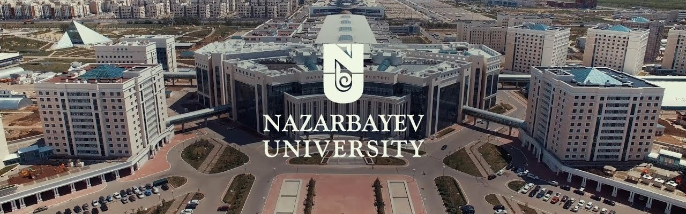

Education and Courses
After graduating from NIS, successfully entered Nazarbayev University for Linguistics and Languages studies. Fluently speaking four languages: Қазақ тілі, Русский язык, English and Deutsch. Also took courses of 한글, 普通话, Français, Español and Italiano. Successfully finished French, Spanish and Italian language courses.
Volunteering and Achievements
Volunteering is a way of helping others. It is giving a person 's time and ability to help someone who may be in need of help. Not only does volunteering help others, but what they may not know is that it can be helpful to themselves. It is a great way for someone to interact with others in their community. It gives someone that time to themselves while also creating bonds when they are doing the greater good. The effects of it can range from many helpful characteristics. From helping those in need, giving back to the community, working for worthwhile causes, and overall helping someone with their health, mentally and physically.
Musical School Graduate
Finished Opera Singing Vocal Courses, Special Guest of several University Projects and Musical School and Theater of Semey and Oskemen.
Next...
Thoughts and Vision
“Attitude is a choice. Happiness is a choice. Optimism is a choice. Kindness is a choice. Giving is a choice. Respect is a choice. Whatever choice you make makes you. Choose wisely.”
As a child, I never thought much about the dark. Well, that's not strictly true. I thought a lot about how scary it was, how much of it there was, I wondered whether the darkness hid the monsters in it, or whether the dark was a monster in itself. But I never thought much about what darkness was, how it behaved, what happened to it when my parents came to switch the lights back on.
There is something fascinating about darkness, in part because it creates pockets of mystery. In true darkness I have no idea what is around me, my surroundings, my company, even my own person become unknown to me for a moment. In part, that is why we find it so scary. But for all the terror of monsters, or things that might sneak up on us, when I think about it, darkness is not very powerful. No matter how deep the darkness, it is never able to extinguish a light. There was never any struggle, when my light went back on, where the darkness fought to keep its hold on me. Even a single flickering flame doesn’t falter because of the darkness around it.
In fact, the only power darkness has is in the space granted it by an absence of light. When the light comes, the darkness retreats. We can see things as they actually are.
When the light comes, the darkness is defeated.
This is a time of year when everything seems against us: the days are too short for our to-do lists, it feels as if it’s been raining for months. We look around us and we see the ravages of climate change, the frenzy of the general election and the sense of divisiveness that recent politics has wrought in our society. This year the winter seems darker than ever.
Let us save the purity and the light in our hearts by clearing all the time their crystal clear hearts.
